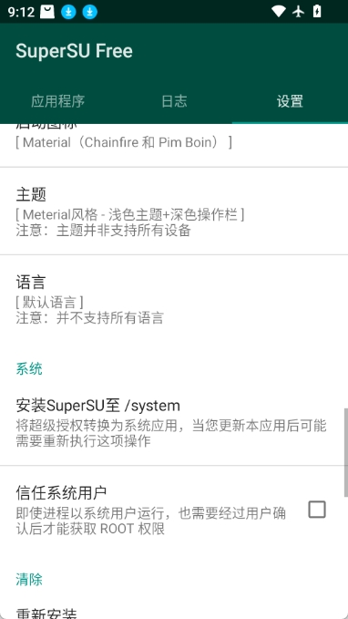

朋友那台被 Kingroot 搞残的旧手机，我用 SuperSU 救回来了
一台被 Kingroot 一键 Root 后裸奔的安卓机，任何应用都能悄摸提权删东西。SuperSU 不是帮你 Root 的工具，它是 Root 之后那道真正有用的闸。
上周六下午，我正窝在沙发上补番，手机弹了个视频通话。是大学室友阿哲，画面里他举着那台用了四年的荣耀 9，屏幕上反复跳着一堆乱七八糟的权限请求，而且根本不弹窗确认——点进去就已经授权完了。
"帮我看看这手机怎么回事，我前两天想装个旧版的 ES 文件管理器，手贱点了一下 Kingroot，结果现在啥 App 都能偷偷跑根命令。昨天晚上它自己把我微信缓存清了一半，聊了三年的表情包没了……"
我让他把手机递过来翻了十分钟。设置里果然挂着一个 Kingroot 的管理器，点开 su 设置默认是"自动允许所有请求"。更狠的是 Kingroot 自己没卸载通道，想删它要么刷固件要么手动进 recovery 分区清 /data/app，对阿哲这种只会"下载 App 一键搞定"的选手来说等于无解。
不是帮你 Root，是管 Root 的
我一开始也以为 SuperSU 是个 Root 工具——直到翻了它的资料才搞清楚，它根本不负责让你拿到 Root。它做的是另一套事：在你已经 Root 之后，架一道可控的闸门，每次有应用想提权就弹个框问你放行还是拒绝，还能记录谁什么时候请求了什么命令。
这正好是阿哲现在最缺的那层东西。Kingroot 给了他一把万能钥匙，然后把钥匙扣直接挂在了所有人都能拿到的地方。SuperSU 的定位就是看门人和审计员——钥匙还是你的，但每次有人想开必须先敲一下门。
我翻了它的官网，它的设计思路很直白：三个面板各司其职。应用程序标签列出所有曾经请求过 Root 的 App，日志面板记录每次请求的时间和命令，设置面板管全局行为。打开 SuperSU 的界面第一眼你会注意到三个标签页整整齐齐，不像 Kingroot 那样堆满"一键优化""清理垃圾"这类花里胡哨的按钮。

单独装 APK 接管 su 二进制
阿哲这台手机已经有 Root 了，所以不需要重新刷 ZIP 包那种搞法——直接替换 su 二进制就行。这条路径是 SuperSU文档 里专门给"已经 Root 但想换权限管理器"的人准备的，步骤走下来还挺顺。
先去 SuperSU下载 拿 APK 安装包，大约四到六兆。Android 八以上默认不给装未知来源，得先进设置把浏览器的"安装未知应用"权限打开。装完之后先别急着打开 App——关键步骤在这：你得先让现有的权限管理器（就是那个 Kingroot）把 su 二进制的控制权交出来。
Kingroot 里有个叫"安装 / 更新 su 二进制"的选项，我点开之后选了"替换 su 二进制"，它弹出警告说这可能导致 Root 失效，我确认了。然后回到桌面打开 SuperSU，它自动检测到设备上已有的 su，提示"需要更新 su 二进制"，点 Continue → Normal，等它跑完重启。
重启的那一刻我盯着屏幕——Kingroot 的那个小企鹅图标还在不在？不在了。SuperSU 的小绿钩图标干干净净地挂在桌面上。我随手打开一个 Root Explorer，弹窗出现了，上面清清楚楚显示着进程链：Root Explorer → su，不像 Kingroot 那样悄无声息。
深度检测：看清是谁在请求
SuperSU 有个我之前没注意到的功能叫深度进程检测。它不只是告诉你"App X 请求了 Root"，还会把整个调用链一层层往上扒——直接调用者是谁、父进程是谁、宿主 APK 包名是什么、运行在什么上下文里。
我给阿哲演示了几个场景。正常的终端模拟器请求 Root，进程链干干净净：Terminal Emulator → su。但如果哪天突然弹出一个请求，调用者是 app_process 这种 Android 用来执行 Java 代码的系统可执行文件，那就要警惕了——正常应用不会直接调它，说明有东西通过反射或者 ClassLoader 动态加载了代码来绕过程序。
最夸张的是如果看到 system_server 这个 Android 核心进程在请求 Root，正常情况下绝对不该出现。阿哲的手机上之前没有装 Xposed 这类 Hook 框架，所以看到这个大概率是被劫持了。
我在设置里顺手勾上了 Enable Su during boot。这个开关控制开机过程中 su 二进制是否立即应用所有已配置的权限规则，默认关闭是为了兼容极少数定制 ROM，但一般用户开着更稳——阿哲那台手机有个开机自启的备份脚本，不开这个的话那个脚本每次都会静默失败，之前他还以为是脚本写坏了。
系统应用转换与 Full Unroot
SuperSU 可以把自己从普通应用变成系统应用——移动到 /system/priv-app/SuperSU/ 目录下，普通方式就卸载不掉了。我给阿哲转了，因为他已经确定不会再换方案了，多一层保护多一层安全。变成系统应用之后也不用担心，以后要升级版本不需要重新做转换，直接在同一目录下覆盖就行。

然后就是收尾的清理工作。SuperSU 接管成功之后，我用 Kingroot 自己的卸载功能把它卸了——千万别用 Kingroot 里的 unroot 选项，那会同时把 su 二进制删掉，等于把 SuperSU 的工作基础直接刨了。卸完 Kingroot，又手动删了它残留的几个 /data 目录。
收尾：把钥匙还给你
整个过程用了不到半小时。重启之后我让阿哲随便点了几个之前被 Kingroot 自动授权过的 App——ES 文件管理器、SD 卡挂载助手、一个旧版的 Terminal——全部正常弹出 SuperSU 的授权弹窗，每个上面都带着清晰的进程链信息。我帮他给几个最常用的设成了"永远允许"，剩下的保留每次询问。
后来我去翻了一下 SuperSU 文档，发现还有不少进阶玩法我没来得及试——比如可以单独给某个 App 设置通知级别、可以开启日志审计记录每次 Root 请求的完整命令、可以一键临时隐藏 Root 或者彻底移除（Full Unroot）。这些功能对大多数人来说可能用不上，但对于像阿哲这种踩过坑的人来说，知道自己手里这道闸有多少备用锁还是挺安心的。
Kingroot 和 360 Root 这类"一键 Root"工具最大的问题不是给你 Root，而是给了 Root 之后就不管了——它帮你打开了家门，但没有给你装锁。SuperSU 干的就是那把锁的活。如果你当初也是图省事用了一键 Root，现在发现手机上到处都是悄摸提权的痕迹，不妨换个思路：不用重新刷固件，装个 SuperSU 的 APK，把 su 的控制权拿回来就行。
这篇资料我在三个地方都做了备份，方便你在不同环境下随时查阅——Chainfire 原始资料整理在 GitHub，国内访问可能有墙所以 Gitee 也同步了一份，内网环境的朋友可以直接去 GitCode 看。